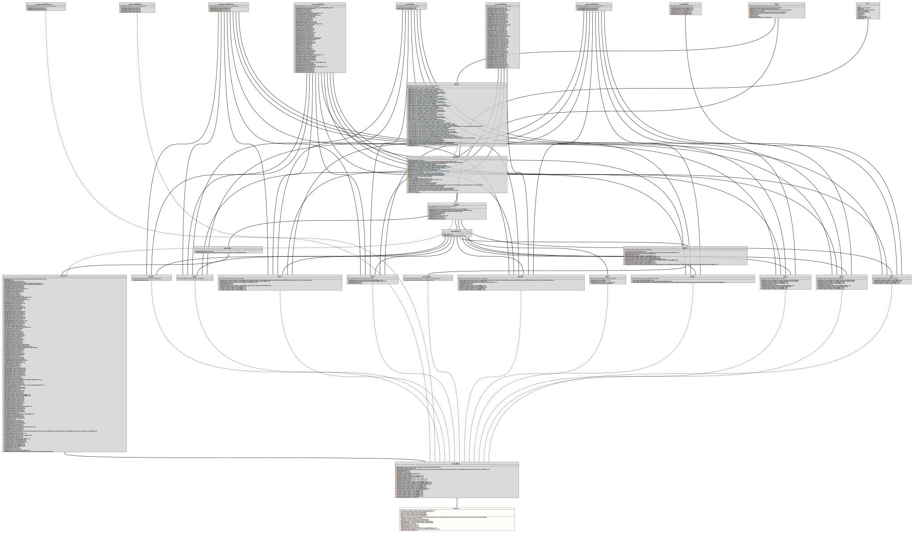

Class UMLConnector
java.lang.Object
org.tquadrat.foundation.xml.builder.internal.XMLElementImpl
org.tquadrat.foundation.xml.builder.spi.XMLElementAdapter
org.tquadrat.foundation.svg.internal.SVGElementImpl
org.tquadrat.foundation.svg.SVGElementAdapter
org.tquadrat.foundation.javadoc.umlgraph.UMLConnector
- All Implemented Interfaces:
org.tquadrat.foundation.svg.AllowsConditionalProcessingAttributes,org.tquadrat.foundation.svg.AllowsDocumentElementEventAttributes,org.tquadrat.foundation.svg.AllowsDocumentEventAttributes,org.tquadrat.foundation.svg.AllowsGlobalEventAttributes,org.tquadrat.foundation.svg.AllowsGraphicalEventAttributes,org.tquadrat.foundation.svg.AllowsPresentationAttributes,org.tquadrat.foundation.svg.AllowsStyleAttributes,org.tquadrat.foundation.svg.AllowsXLinkAttributes,org.tquadrat.foundation.svg.SVGClipPath,org.tquadrat.foundation.svg.SVGElement,org.tquadrat.foundation.svg.SVGElementWithChildren,org.tquadrat.foundation.svg.SVGGroup,org.tquadrat.foundation.svg.SVGLine,org.tquadrat.foundation.svg.SVGMarker,org.tquadrat.foundation.svg.SVGPath,org.tquadrat.foundation.svg.SVGPositionedMarker,org.tquadrat.foundation.svg.SVGRectangle,org.tquadrat.foundation.svg.SVGStyle,org.tquadrat.foundation.svg.SVGSymbol,org.tquadrat.foundation.svg.SVGText,org.tquadrat.foundation.svg.SVGTSpan,org.tquadrat.foundation.svg.SVGUse,org.tquadrat.foundation.xml.builder.spi.Element,org.tquadrat.foundation.xml.builder.XMLElement
@ClassVersion(sourceVersion="$Id: UMLConnector.java 820 2020-12-29 20:34:22Z tquadrat $")
@API(status=INTERNAL,
since="0.0.5")
public final class UMLConnector
extends org.tquadrat.foundation.svg.SVGElementAdapter
The representation of the lines that connects the type elements in a UML
diagram.
Instances of this class are used as if they are an instance of
Instances of this class are used as if they are an instance of
SVGPath.- Author:
- Thomas Thrien (thomas.thrien@tquadrat.org)
- Version:
- $Id: UMLConnector.java 820 2020-12-29 20:34:22Z tquadrat $
- Since:
- 0.0.5
- UML Diagram
-

UML Diagram for "org.tquadrat.foundation.javadoc.umlgraph.UMLConnector"
{kind=link}
-
Nested Class Summary
Nested classes/interfaces inherited from interface org.tquadrat.foundation.xml.builder.XMLElement
org.tquadrat.foundation.xml.builder.XMLElement.Flags -
Field Summary
FieldsModifier and TypeFieldDescriptionstatic final UMLConnector[]An empty array ofUMLConnectorobjects.private final TypeSymbolThe type symbol for the child (where the connector starts).private final UMLConnectorTypeThe type for this connector.private PointThe end point for the path representing this connector.private final TypeSymbolThe type symbol for the parent (where the connector ends).private PointThe start point for the path representing this connector.Fields inherited from interface org.tquadrat.foundation.svg.AllowsConditionalProcessingAttributes
CONDITIONALPROCESSING_ATTRIBUTESFields inherited from interface org.tquadrat.foundation.svg.AllowsDocumentElementEventAttributes
DOCUMENTELEMENTEVENT_ATTRIBUTESFields inherited from interface org.tquadrat.foundation.svg.AllowsDocumentEventAttributes
DOCUMENTEVENT_ATTRIBUTESFields inherited from interface org.tquadrat.foundation.svg.AllowsGlobalEventAttributes
GLOBALEVENT_ATTRIBUTESFields inherited from interface org.tquadrat.foundation.svg.AllowsGraphicalEventAttributes
GRAPHICALEVENT_ATTRIBUTESFields inherited from interface org.tquadrat.foundation.svg.AllowsPresentationAttributes
PRESENTATION_ATTRIBUTESFields inherited from interface org.tquadrat.foundation.svg.AllowsStyleAttributes
STYLE_ATTRIBUTESFields inherited from interface org.tquadrat.foundation.svg.AllowsXLinkAttributes
XLINK_ATTRIBUTESFields inherited from interface org.tquadrat.foundation.xml.builder.spi.Element
EMPTY_Element_ARRAYFields inherited from interface org.tquadrat.foundation.svg.SVGClipPath
EMPTY_SVGClipPath_ARRAYFields inherited from interface org.tquadrat.foundation.svg.SVGElement
CORE_ATTRIBUTES, EMPTY_SVGElement_ARRAYFields inherited from interface org.tquadrat.foundation.svg.SVGGroup
EMPTY_SVGGroup_ARRAYFields inherited from interface org.tquadrat.foundation.svg.SVGLine
EMPTY_SVGLine_ARRAYFields inherited from interface org.tquadrat.foundation.svg.SVGMarker
EMPTY_SVGMarker_ARRAYFields inherited from interface org.tquadrat.foundation.svg.SVGPath
EMPTY_SVGPath_ARRAYFields inherited from interface org.tquadrat.foundation.svg.SVGPositionedMarker
EMPTY_SVGPositionedMarker_ARRAYFields inherited from interface org.tquadrat.foundation.svg.SVGRectangle
EMPTY_SVGRectangle_ARRAYFields inherited from interface org.tquadrat.foundation.svg.SVGStyle
EMPTY_SVGStyle_ARRAYFields inherited from interface org.tquadrat.foundation.svg.SVGSymbol
EMPTY_SVGSymbol_ARRAYFields inherited from interface org.tquadrat.foundation.svg.SVGText
EMPTY_SVGText_ARRAYFields inherited from interface org.tquadrat.foundation.svg.SVGTSpan
EMPTY_SVGTSpan_ARRAYFields inherited from interface org.tquadrat.foundation.svg.SVGUse
EMPTY_SVGUse_ARRAYFields inherited from interface org.tquadrat.foundation.xml.builder.XMLElement
EMPTY_XMLElement_ARRAY, NO_APPEND -
Constructor Summary
ConstructorsConstructorDescriptionUMLConnector(UMLConnectorType type, TypeSymbol parent, TypeSymbol child) Creates a newUMLConnectorinstance. -
Method Summary
Modifier and TypeMethodDescriptionfinal org.tquadrat.foundation.svg.SVGPathReturns thisUMLConnectorinstance as an instance ofSVGPath.private final org.tquadrat.foundation.svg.type.SVGPathElement[]Composes the path that represents this UML connector.final TypeSymbolReturns the type symbol where the connector starts.final TypeSymbolReturns the type symbol where the connector ends.final voidsetEndPoint(double x, double y) Sets the end point for the path representing this connector.final voidsetMarkerEnd(URI ignored) The markers for the path representing this UML connector are set internally, so this method will do nothing.final voidsetMarkerMid(URI ignored) The markers for the path representing this UML connector are set internally, so this method will do nothing.final voidsetMarkerStart(URI ignored) The markers for the path representing this UML connector are set internally, so this method will do nothing.final voidsetPathDefinition(org.tquadrat.foundation.svg.type.SVGPathElement... ignored) The definition of the path for this UML connector is done internally, so calling this method does not have any effect.final voidsetPathLength(org.tquadrat.foundation.svg.type.SVGNumber.SVGUserUnitValue ignored) The definition of the path for this UML connector is done internally, so calling this method does not have any effect.final voidsetStartPoint(double x, double y) Sets the start point for the path representing this connector.Methods inherited from class org.tquadrat.foundation.svg.SVGElementAdapter
addStyle, defineLine, getStyleSheet, merge, setClipPathUnits, setDx, setDy, setLengthAdjust, setMarkerHeight, setMarkerUnits, setMarkerWidth, setOrientation, setOrientation, setPathLength, setPathLength, setPosition, setReferenceX, setReferenceY, setRotate, setTextLength, setX, setX1, setX2, setY, setY1, setY2, toStringMethods inherited from class org.tquadrat.foundation.svg.internal.SVGElementImpl
addChild, setAbortHandler, setActivationHandler, setAlignmentBaseline, setAttribute, setBaselineShift, setCancelHandler, setCanPlayHandler, setCanPlayThroughHandler, setChangeHandler, setClass, setClickHandler, setClip, setClipPath, setClipRule, setCloseHandler, setColor, setColorInterpolation, setColorInterpolationFilters, setColorProfile, setColorRendering, setCopyHandler, setCueChangeHandler, setCursor, setCutHandler, setDblClickHandler, setDescription, setDirection, setDisplay, setDominantBaseline, setDragEndHandler, setDragEnterHandler, setDragExitHandler, setDragHandler, setDragLeaveHandler, setDragOverHandler, setDragStartHandler, setDropHandler, setDurationChangeHandler, setEmptiedHandler, setEnableBackground, setEndedHandler, setErrorHandler, setExternalResourcesRequired, setFill, setFillOpacity, setFillRule, setFilter, setFloodColor, setFloodOpacity, setFocusHandler, setFocusInHandler, setFocusOutHandler, setFontFamily, setFontSize, setFontSizeAdjust, setFontStretch, setFontStyle, setFontVariant, setFontWeight, setGlyphOrientationHorizontal, setGlyphOrientationVertical, setHeight, setId, setImageRendering, setInputHandler, setInvalidHandler, setKerning, setKeyDownHandler, setKeyPressHandler, setKeyUpHandler, setLang, setLetterSpacing, setLightingColor, setLoadedDataHandler, setLoadedMetadataHandler, setLoadHandler, setLoadStartHandler, setMask, setMouseDownHandler, setMouseEnterHandler, setMouseLeaveHandler, setMouseMoveHandler, setMouseOutHandler, setMouseOverHandler, setMouseUpHandler, setMouseWheelHandler, setOpacity, setOverflow, setPasteHandler, setPauseHandler, setPlayHandler, setPlayingHandler, setPointerEvents, setPreserveAspectRatio, setPreserveSpace, setProgressHandler, setRateChangeHandler, setReference, setRequiredExtensions, setRequiredFeatures, setResetHandler, setResizeHandler, setRx, setRy, setScrollHandler, setSeekedHandler, setSeekingHandler, setSelectHandler, setShapeRendering, setShowHandler, setStalledHandler, setStopColor, setStopOpacity, setStroke, setStrokeDashArray, setStrokeDashOffset, setStrokeLineCap, setStrokeLineJoin, setStrokeMiterLimit, setStrokeOpacity, setStrokeWidth, setStyle, setSubmitHandler, setSuspendHandler, setSystemLanguage, setTabIndex, setTextAnchor, setTextDecoration, setTextRendering, setTimeUpdateHandler, setTitle, setToggleHandler, setTransform, setUnicodeBidi, setUnloadHandler, setVectorEffect, setViewBox, setVisibility, setVolumeChangeHandler, setWaitHandler, setWidth, setWordSpacing, setWritingMode, setX, setXlinkActuate, setXLinkArcRole, setXLinkReference, setXLinkRole, setXLinkShow, setXLinkTitle, setXLinkType, setXMLBase, setXMLId, setXMLLang, setY, updateRegistriesMethods inherited from class org.tquadrat.foundation.xml.builder.internal.XMLElementImpl
addCDATA, addChild, addComment, addPredefinedMarkup, addText, getAttribute, getChildren, getElementName, getFlags, getNamespaces, getParent, getSortOrder, hasChildren, registerAttributeSequence, registerAttributeSequence, registerValidAttributes, registerValidChildren, retrieveValidAttributes, retrieveValidChildren, setAttribute, setNamespace, setNamespace, setNamespace, setNamespace, setNamespace, setParent, toStringMethods inherited from class java.lang.Object
clone, equals, finalize, getClass, hashCode, notify, notifyAll, wait, wait, waitMethods inherited from interface org.tquadrat.foundation.svg.AllowsConditionalProcessingAttributes
setExternalResourcesRequired, setRequiredExtensions, setRequiredFeatures, setSystemLanguageMethods inherited from interface org.tquadrat.foundation.svg.AllowsDocumentElementEventAttributes
setCopyHandler, setCutHandler, setPasteHandlerMethods inherited from interface org.tquadrat.foundation.svg.AllowsDocumentEventAttributes
setAbortHandler, setErrorHandler, setResizeHandler, setScrollHandler, setUnloadHandlerMethods inherited from interface org.tquadrat.foundation.svg.AllowsGlobalEventAttributes
setCancelHandler, setCanPlayHandler, setCanPlayThroughHandler, setChangeHandler, setClickHandler, setCloseHandler, setCueChangeHandler, setDblClickHandler, setDragEndHandler, setDragEnterHandler, setDragExitHandler, setDragHandler, setDragLeaveHandler, setDragOverHandler, setDragStartHandler, setDropHandler, setDurationChangeHandler, setEmptiedHandler, setEndedHandler, setErrorHandler, setFocusHandler, setInputHandler, setInvalidHandler, setKeyDownHandler, setKeyPressHandler, setKeyUpHandler, setLoadedDataHandler, setLoadedMetadataHandler, setLoadHandler, setLoadStartHandler, setMouseDownHandler, setMouseEnterHandler, setMouseLeaveHandler, setMouseMoveHandler, setMouseOutHandler, setMouseOverHandler, setMouseUpHandler, setMouseWheelHandler, setPauseHandler, setPlayHandler, setPlayingHandler, setProgressHandler, setRateChangeHandler, setResetHandler, setResizeHandler, setScrollHandler, setSeekedHandler, setSeekingHandler, setSelectHandler, setShowHandler, setStalledHandler, setSubmitHandler, setSuspendHandler, setTimeUpdateHandler, setToggleHandler, setVolumeChangeHandler, setWaitHandlerMethods inherited from interface org.tquadrat.foundation.svg.AllowsGraphicalEventAttributes
setActivationHandler, setFocusInHandler, setFocusOutHandlerMethods inherited from interface org.tquadrat.foundation.svg.AllowsPresentationAttributes
setAlignmentBaseline, setBaselineShift, setClip, setClipPath, setClipRule, setColor, setColorInterpolation, setColorInterpolationFilters, setColorProfile, setColorRendering, setCursor, setDirection, setDisplay, setDominantBaseline, setEnableBackground, setFill, setFillOpacity, setFillRule, setFilter, setFloodColor, setFloodOpacity, setFontFamily, setFontSize, setFontSizeAdjust, setFontStretch, setFontStyle, setFontVariant, setFontWeight, setGlyphOrientationHorizontal, setGlyphOrientationVertical, setImageRendering, setKerning, setLetterSpacing, setLightingColor, setMask, setOpacity, setOverflow, setPointerEvents, setShapeRendering, setStopColor, setStopOpacity, setStroke, setStrokeDashArray, setStrokeDashOffset, setStrokeLineCap, setStrokeLineJoin, setStrokeMiterLimit, setStrokeOpacity, setStrokeWidth, setTextAnchor, setTextDecoration, setTextRendering, setUnicodeBidi, setVectorEffect, setVisibility, setWordSpacing, setWritingModeMethods inherited from interface org.tquadrat.foundation.svg.AllowsStyleAttributes
setClass, setStyleMethods inherited from interface org.tquadrat.foundation.svg.AllowsXLinkAttributes
setXlinkActuate, setXLinkArcRole, setXLinkReference, setXLinkRole, setXLinkShow, setXLinkTitle, setXLinkTypeMethods inherited from interface org.tquadrat.foundation.xml.builder.spi.Element
getAttribute, getChildren, getElementName, getNamespaces, getParent, hasChildren, isBlockMethods inherited from interface org.tquadrat.foundation.svg.SVGElement
addComment, getSVGElementCategory, setId, setLang, setPreserveSpace, setTabIndex, setTitle, setXMLBase, setXMLId, setXMLLangMethods inherited from interface org.tquadrat.foundation.svg.SVGElementWithChildren
addChild, setDescriptionMethods inherited from interface org.tquadrat.foundation.svg.SVGLine
setEndPoint, setStartPointMethods inherited from interface org.tquadrat.foundation.svg.SVGMarker
setExternalResourcesRequired, setMarkerDimensions, setPreserveAspectRatio, setReferencePoint, setTransform, setViewBoxMethods inherited from interface org.tquadrat.foundation.svg.SVGRectangle
defineRectangle, setHeight, setRx, setRy, setWidth, setX, setYMethods inherited from interface org.tquadrat.foundation.svg.SVGSymbol
setExternalResourcesRequired, setPreserveAspectRatio, setViewBoxMethods inherited from interface org.tquadrat.foundation.svg.SVGText
addCDATA, addTextMethods inherited from interface org.tquadrat.foundation.svg.SVGTSpan
addCDATA, addTextMethods inherited from interface org.tquadrat.foundation.svg.SVGUse
setHeight, setWidth, setX, setYMethods inherited from interface org.tquadrat.foundation.xml.builder.XMLElement
addCDATA, addCDATA, addCDATA, addCDATA, addCDATA, addCDATA, addCDATA, addCDATA, addCDATA, addCDATA, addCDATA, addCDATA, addCDATA, addText, addText, addText, addText, addText, addText, addText, addText, addText, addText, addText, addText, addText, setAttribute, setAttribute, setAttribute, setAttribute, setAttribute, setAttribute, setAttribute, setAttribute, setAttribute, setAttribute, setAttribute, setAttribute, setAttributeIfNotEmpty, setAttributeIfNotEmpty
){kind=link}
){kind=link}
-
Field Details
-
EMPTY_UMLConnector_ARRAY
An empty array ofUMLConnectorobjects. -
m_ConnectorType
The type for this connector. -
m_Child
The type symbol for the child (where the connector starts). -
m_EndPoint
The end point for the path representing this connector. -
m_Parent
The type symbol for the parent (where the connector ends). -
m_StartPoint
The start point for the path representing this connector.
-
-
Constructor Details
-
UMLConnector
Creates a newUMLConnectorinstance.- Parameters:
type- The type for this connector.parent- The type symbol for the parent (where the connector ends).child- The type symbol for the child (where the connector starts).
-
-
Method Details
-
asSVGPath
Returns thisUMLConnectorinstance as an instance ofSVGPath.- Returns:
- This instance.
-
composePath
Composes the path that represents this UML connector.- Returns:
- The path definition.
-
getAttributes
- Specified by:
getAttributesin interfaceorg.tquadrat.foundation.xml.builder.spi.Element- Overrides:
getAttributesin classorg.tquadrat.foundation.xml.builder.internal.XMLElementImpl
-
getChildTypeSymbol
Returns the type symbol where the connector starts.- Returns:
- The child's type symbol.
-
getParentTypeSymbol
Returns the type symbol where the connector ends.- Returns:
- The parent's type symbol.
-
setEndPoint
Sets the end point for the path representing this connector.- Parameters:
x- The x coordinate.y- The y coordinate.
-
setMarkerEnd
The markers for the path representing this UML connector are set internally, so this method will do nothing.- Specified by:
setMarkerEndin interfaceorg.tquadrat.foundation.svg.AllowsPresentationAttributes- Overrides:
setMarkerEndin classorg.tquadrat.foundation.svg.internal.SVGElementImpl- Parameters:
ignored- Ignored!
-
setMarkerMid
The markers for the path representing this UML connector are set internally, so this method will do nothing.- Specified by:
setMarkerMidin interfaceorg.tquadrat.foundation.svg.AllowsPresentationAttributes- Overrides:
setMarkerMidin classorg.tquadrat.foundation.svg.internal.SVGElementImpl- Parameters:
ignored- Ignored!
-
setMarkerStart
The markers for the path representing this UML connector are set internally, so this method will do nothing.- Specified by:
setMarkerStartin interfaceorg.tquadrat.foundation.svg.AllowsPresentationAttributes- Overrides:
setMarkerStartin classorg.tquadrat.foundation.svg.internal.SVGElementImpl- Parameters:
ignored- Ignored!
-
setPathDefinition
The definition of the path for this UML connector is done internally, so calling this method does not have any effect.- Specified by:
setPathDefinitionin interfaceorg.tquadrat.foundation.svg.SVGPath- Overrides:
setPathDefinitionin classorg.tquadrat.foundation.svg.SVGElementAdapter- Parameters:
ignored- Ignored!
-
setPathLength
public final void setPathLength(org.tquadrat.foundation.svg.type.SVGNumber.SVGUserUnitValue ignored) The definition of the path for this UML connector is done internally, so calling this method does not have any effect.- Specified by:
setPathLengthin interfaceorg.tquadrat.foundation.svg.SVGLine- Specified by:
setPathLengthin interfaceorg.tquadrat.foundation.svg.SVGPath- Specified by:
setPathLengthin interfaceorg.tquadrat.foundation.svg.SVGRectangle- Overrides:
setPathLengthin classorg.tquadrat.foundation.svg.internal.SVGElementImpl- Parameters:
ignored- Ignored!
-
setStartPoint
Sets the start point for the path representing this connector.- Parameters:
x- The x coordinate.y- The y coordinate.
-